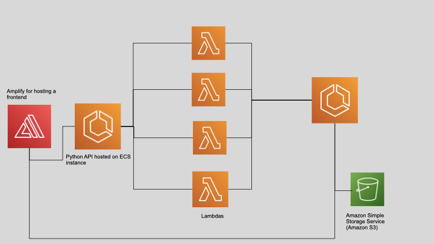
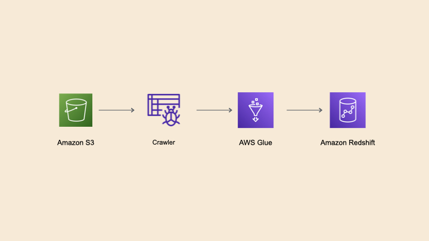

This is the future. Or maybe the present.
At the moment servers still remain the industry standard. I can completely understand why you would choose to use your own in-house server rather than outsourcing it to the cloud. The likes of security and data protection is clearly a winner on this front. It’s secured with on premise systems and there is no third party intermediary getting involved. This should not deter you from considering moving to serverless. There is a movement towards cloud adoption with different cloud computing services such as Iaas(Infrastructure as a service), SaaS(Software as a service) and Paas(Platform as a service). We now have the next iteration which is FaaS or functions as a service , it is a way to allow developers to write business logic using serverless computing.
What is serverless? Now you may think serverless means there is no servers and it is all held on this ethereal network or maybe you’re a logical thinker and you don’t! Often serverless computing refers to an architectural decision to place all your server management and maintenance to a third party cloud provider such as AWS. This lets companies focus on developing their product and us (developers) focus on writing code (woohoo!)
Why is Serverless good for me as a developer
Do you at the moment know how to maintain a server? If yes, then you're lying. If no, then you're probably like me and you already have a tonne of things to learn. So why add another thing like learning how to maintain your servers onto that massive to do list. You can skip over how to configure your OS, won't be kept awake a night wondering like everything if your server is big enough. Deploying you're objectively beautiful code without having the fear of system dependencies to configure will be a thing of the past. You can outsource all this pain to the likes of AWS in simple steps. There is plenty of applications of using a serverless design. Some examples that follow these practice could include:
For developing web applications you can use the likes of AWS Lambda and AWS Amplify
Performaing large scale data processing you can use the likes of AWS Glue for a fully managed ETL process
What are the Benefits and cost of serverless vs servers in computing
Benefits
- Really easy to scale
- No management of servers
- pay as you go
Costs
- Security - a vendor is running your code and processing your data
- There is a timeout, so long running process are not suitable
- A Steep learning curve
How do I get Started
As you can probably tell now i've been sucked into the amazon marketing machine and spend a lot of my time there now. Therefore in my opinion AWS and serverless is some of the best places to start. Outside of the concept of serverless there is a framework called the serverless framework. This can be easily used to deploy and manage your serverless applications.
Serverless Framework
As you can see in the serverless banner above, this framework is quite mature and you can find a lot of information about it here on the serverless webpage Essentially the serverless framework allows you to deploy infrastructure and code at the same time. I will be doing a separate post about the serverless framework another time which I will link here.
In Conclusion
Serverless is undeniably powerful and provides an essential service for a certain demographic of the market. For a lot of startups in the technology space without cloud computing their ideas would be rendered nearly impossible.
Should you move to serverless so? Not always! This is always a loaded question and depends a lot on your circumstances. What sort of traffic are you expecting and how much computer power do you need will play a factor into whether serverless is the right choice for you. If your company already has an in-house team with servers, then it would probably cost your team more to remove this set up and move to serverless. On the other hand if you’re a small startup and with only a few members in your team and no servers then it would seem like a no-brainer to move to serverless.